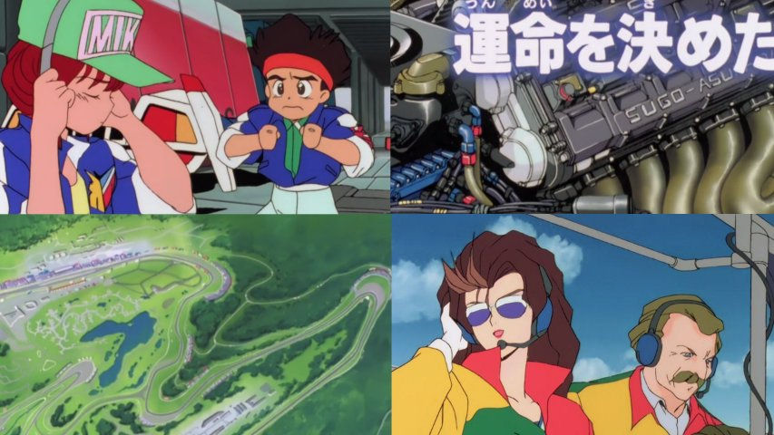

Des nouvelles de Future GPX Cyber Formula!

Des nouvelles fraîches pour cette série qui sera maintenant proposée en Bluray 720p, et remasterisé s'il vous plaît!
Alors pas d'épisode cette semaine à cause de l'adaptation au nouveau format, et de la révision des sous-titres bien sûr. Les épisode déjà terminés seront ajoutés en 720p, et je poursuivrai ensuite la série avec cette superbe qualité!
Pour les anciennes sorties en SD toute moche à côté, je vais les laisser au cas où vous voudriez comparer, mais y'a pas photo ^_^
Allez, je vous montre un peu à quoi ça ressemble en début d'article pour vous faire patienter (encore une fois), mais c'est pour la bonne cause ;)